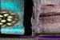
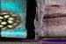

Nanobiology
In 1986, through research, Koruga's strange dream that had kept resurfacing
in his mind since 1978, encouraged and eventually made the connection that
the symmetrical structure of clathrin, an important protein in each cell,
is identical to that of C60. "Clathrins are the major components of
coated vesicles, important organelles for intracellular material transfer
including synaptic neurotransmitter release." He discovered a paper
written by two Japanese scientists in 1969, which described the structure
of clathrin as a soccer ball -- the same example used to describe the structure
of C60 before it had been seen through STM.
Clathrin is what is called a Bio-Fullerene, and what is exciting to the
scientists researching in this field is that "Fullerenes offer capabilities
for nanoscale devices which can perform functions normally implemented by
biomolecular assemblies." In other words, they have the potential to
be used to create artificial life.
 
